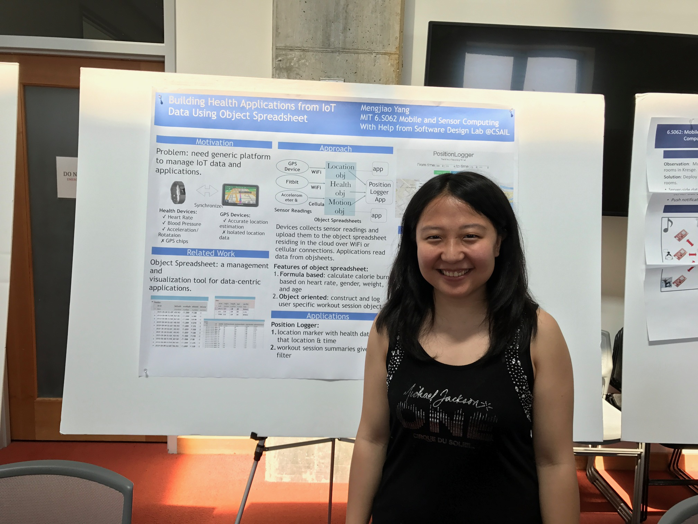
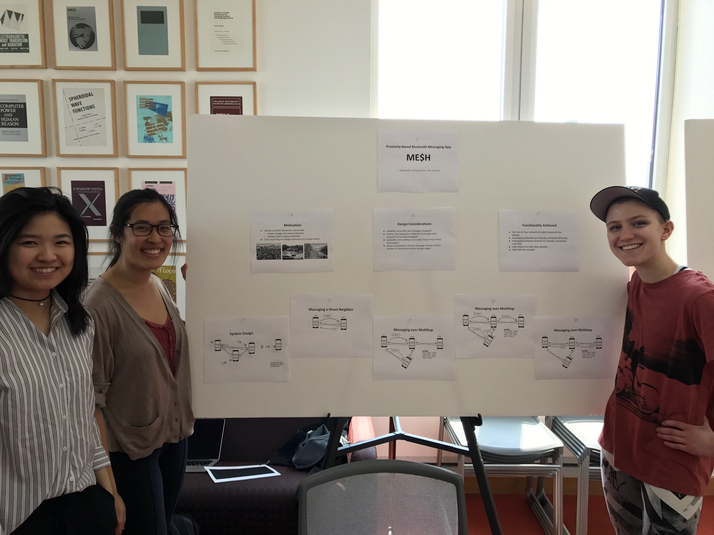
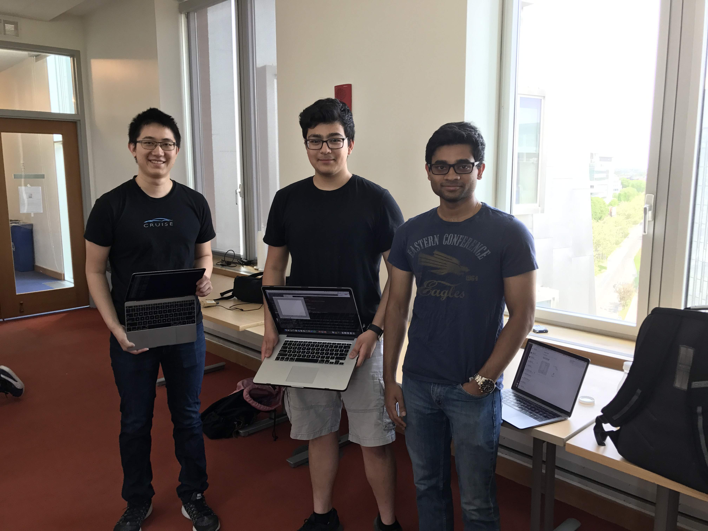
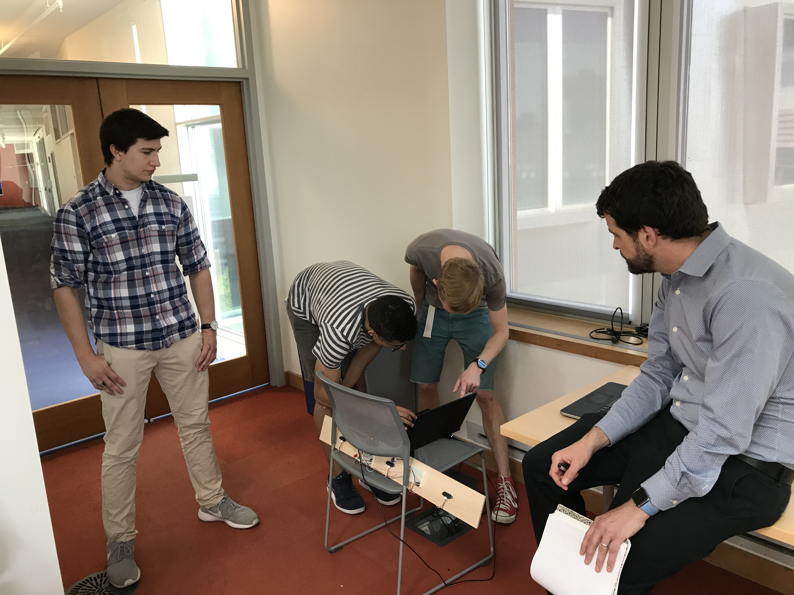
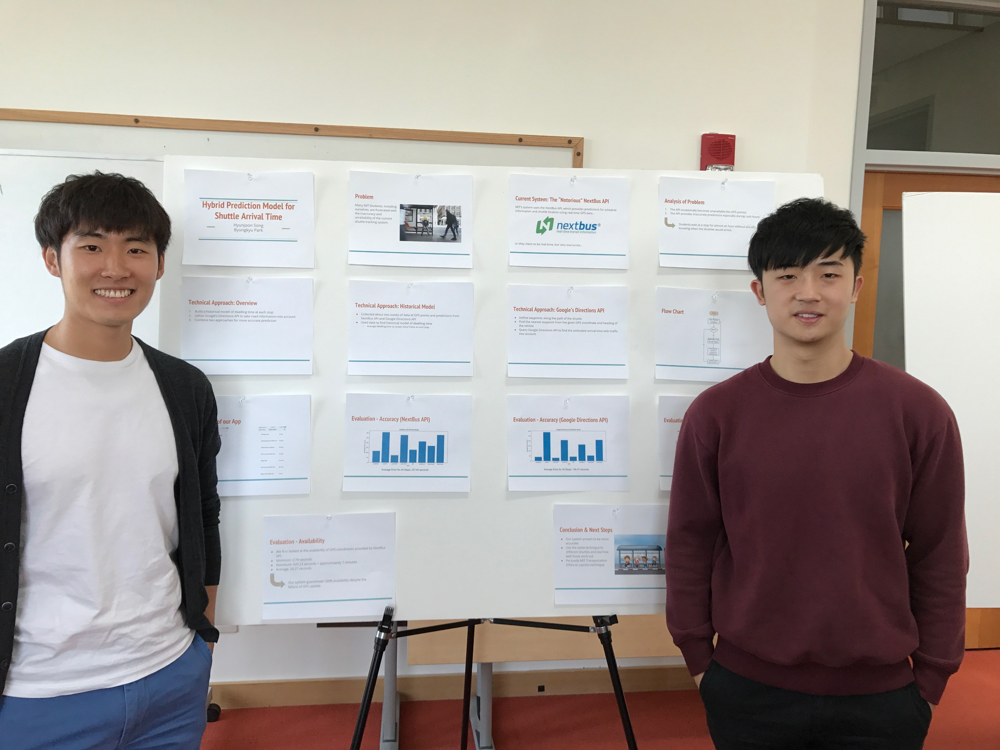
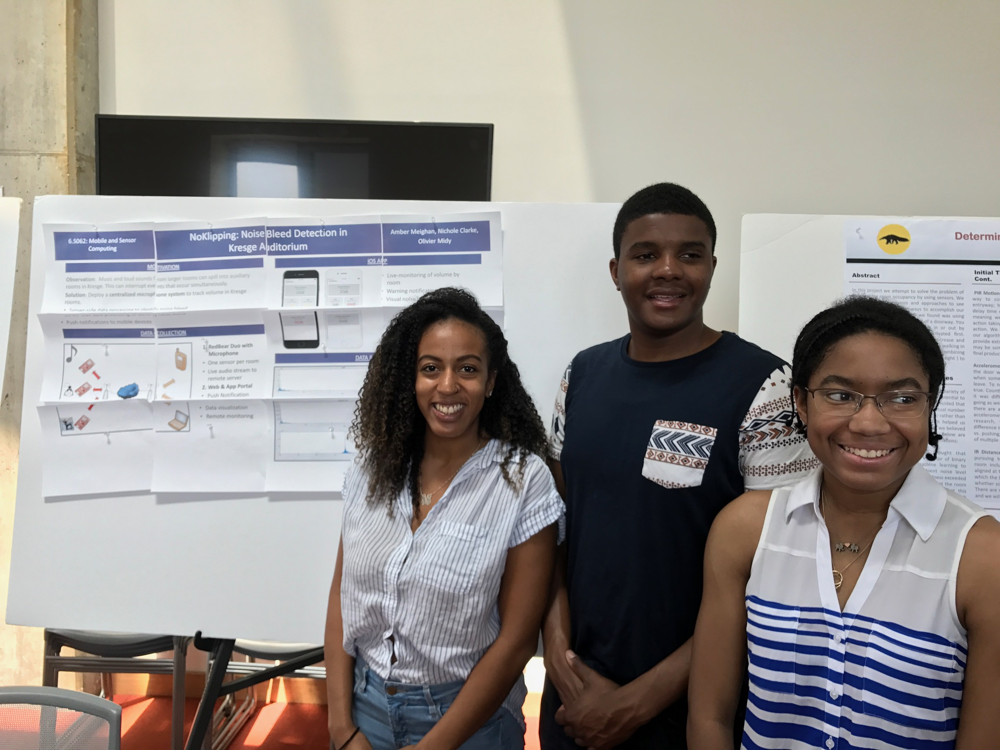
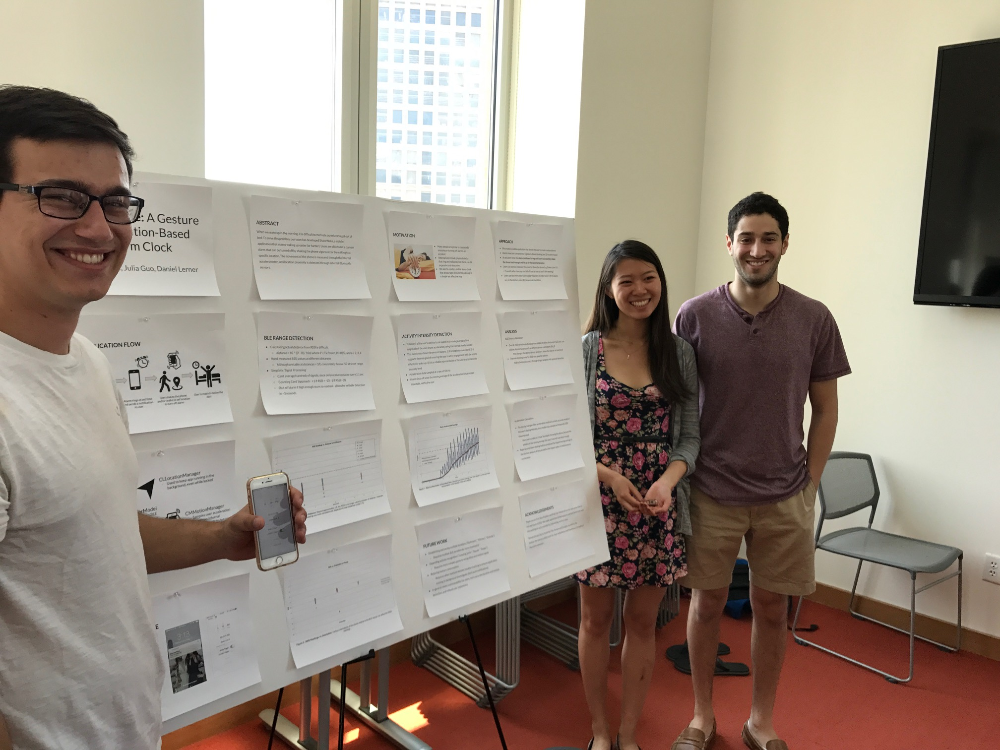
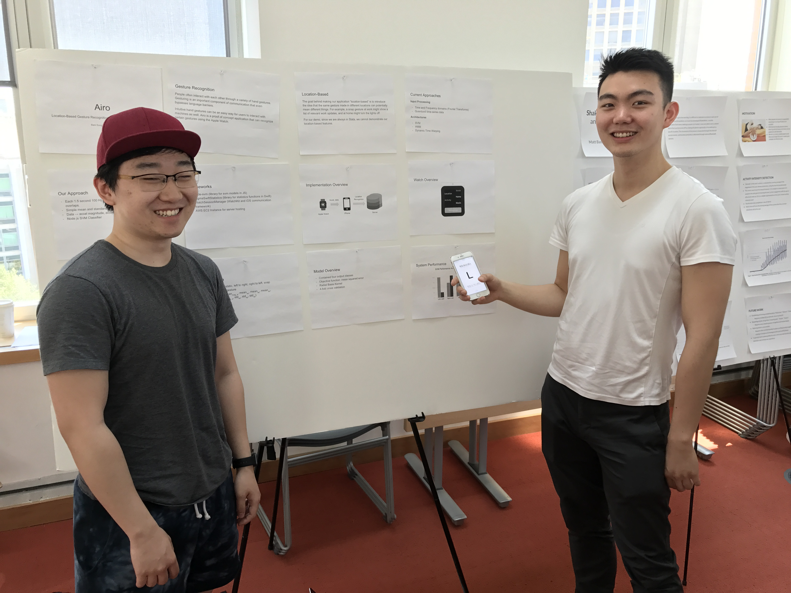

Semester Project Presentations
6.S062 Mobile and Sensor Computing
Wednesday, May 17, 2017, 11am-12:30pm, 32-G882
Wednesday, May 17, 2017, 11am-12:30pm, 32-G882
On Wednesday, May 17, 2017, from 11am-12:30pm, the students of 6.S062 Spring 2017 (Mobile and Sensor Computing) presented posters and demos of their semester projects in the 32-G882.
Building Health Applications from IoT Data Using Object SpreadsheetMengjiao Yang |
|
|
As many IoT devices have been developed in healthcare, the need for a generic platform to manage healthcare data collected from different devices increases. One might, for example, collect heart rate and blood pressure data from a Fitbit tracker, and use the GPS chip built in an iPhone to record his/her locations. In this project, we explore using object spreadsheet developed by the Software Design Group at MIT as a storage backend to consolidate data gathered from different devices. To demonstrate the feasibility of such consolidation, we built a position logger web application that logs a user’s trace with health annotations such as heart rate and blood pressure. In building this application, we noticed that object spreadsheet is easily programmable given its formula-based feature and object-oriented nature. |
 |
Title: ME$H: Proximity-based Bluetooth Messaging AppTina Quach, J. Maunsell, and Amanda Ke |
|
|
During disasters, core components of communication systems fail, including cellular and WiFi networks. A Bluetooth mesh network of mobile devices would enable people to contact each other during an outage. Furthermore, large events often have limited reception and bandwidth due to the number of users competing for these resources. We’ve implemented a proximity-based messaging iOS app that allows people to communicate over Bluetooth low energy (BLE) using an identity of their choice. The app enables users to create and join scalable mesh networks based on proximity of other users and allows them to message anyone else in their mesh network using a multi-hop, message-forwarding protocol. This solution thrives in large crowds, since the network becomes more efficient and wide reaching as it scales up. As a proof of concept, our project is iOS only and tested in a specific building, Senior House dormitory. Using our BLE mesh network and our app, we test the efficacy of our protocol for multi-hop in terms of loss rate, latency, and power consumption. |
 |
WiFinder - Indoor Localization via Commodity HardwareDouglas Chen, Bishesh Khadka, Varun Mahon |
|
|
Existing solutions for indoor localization typically require specialized hardware such as ultrasound and RF transmitters/receivers, or rely on low accuracy metrics such as WiFi signal strength. We propose the WiFinder system for localization within rooms using WiFi and acoustic measurements on laptops. WiFinder measures distance by comparing the time difference in arrival of acoustic and WiFi signals. WiFinder tolerates timing idiosyncrasies from running on a non-real time operating system, and is resilient to ambient noise. We find that WiFinder is able to achieve accuracy within a foot, and with a maximum range exceeding 25 feet. |
 |
Determining room occupancy via combined sensorsFamien Koko, Justin Tunis and Jon Beaulieu |
|
|
In this project we attempt to solve the problem of determining room occupancy by using sensors. We test a variety of sensors and approaches to see what are the most viable ways to accomplish our goal. One effective approach we found was using an array of IR sensors placed out of a doorway. You can determine when people walk in or out by looking at which sensors were activated first. Starting from occupancy 0, you can increase and decrease the occupancy based on people walking in or out. Edge cases can be handled by combining other sensors, (such as noise sensors and light ) to corroborate data from the IR sensors. |
 |
Hybrid Prediction Model for Shuttle Arrival TimeByungkyu Park, Hyunjoon Song |
|
|
Many MIT students including ourselves are often frustrated with the inaccuracy and unreliability of the current shuttle tracking application. The application utilizes the NextBus API, which provides predictions for schedule information and shuttle location using real-time GPS data. Unfortunately, the API occasionally becomes unavailable and provides inaccurate predictions especially during rush hours, making students wait for almost an hour without knowing when the shuttles would arrive. To address these challenges, we systematically analyzed our collected data over the past few weeks and created a statistical model based on the historical average of shuttle dwelling time at each stop. In addition, we query the Google Directions API to get a prediction of running time at each link to take in account of real-time traffic information . By combining these two sources, we have created a hybrid prediction model that accurately predicts shuttle arrival time. |
 |
Noklipping: Noise Bleed Detection in Kresge AuditoriumAmber Meighan, Nichole Clarke and Olivier Midy |
|
|
In this work, algorithms are developed and evaluated to detect physical activities from data acquired using five small biaxial accelerometers worn simultaneously on different parts of the body. Acceleration data was collected from 20 subjects without researcher supervision or observation. Subjects were asked to perform a sequence of everyday tasks but not told specifically where or how to do them. Mean, energy, frequency-domain entropy, and correlation of acceleration data was calculated and several classifiers using these features were tested. Decision tree classifiers showed the best performance recognizing everyday activities with an overall accuracy rate of 84%. The results show that although some activities are recognized well with subject-independent training data, others appear to require subject-specific training data. The results suggest that multiple accelerometers aid in recognition because conjunctions in acceleration feature values can effectively discriminate many activities. With just two biaxial accelerometers – thigh and wrist – the recognition performance dropped only slightly. This is the first work to investigate performance of recognition algorithms with multiple, wire-free accelerometers on 20 activities using datasets annotated by the subjects themselves. |
 |
ShakeWake: A Gesture and Location-Based Alarm ClockMatt Basile, Julia Guo and Daniel Lerner |
|
|
When we wake up in the morning, it is difficult to motivate ourselves to get out of bed. To solve this problem, our team has developed ShakeWake, a mobile application that makes waking up easier (or harder). Users are able to set a custom alarm that can be turned off by shaking the phone vigorously or by walking to a specific location. The movement of the phone is measured through the internal accelerometer, and location proximity is detected through external Bluetooth sensors. |
 |
A Location-Based Gesture Recognition App with Apple Watch IntegrationSamuel Song, Jing Lin |
|
|
Making hand gestures is a common way that people interact with each other. With Airo, we use accelerometer data from the Apple Watch to recognize gestures and interact with the phone. |
 |
Images from the Noun project:
Barbell by Dara Ullrich
Shake Phone by Web Icon Set
Massachusetts Institute of Technology by NATAPON CHANTABUTR
Self-driving car by Jakob Vogel
entrance by Marc Andre Roy
Bump to Right by Web Icon Set
Donkey by Luis Prado
Tracking Location by Friedrich Santana
internet of things by Felix Westphal
PDF File by Laurent Canivet
Video by Milky - Digital innovation
Graph by Simple Icons